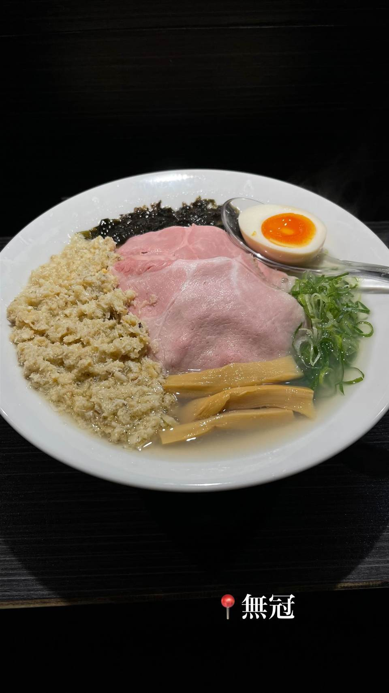
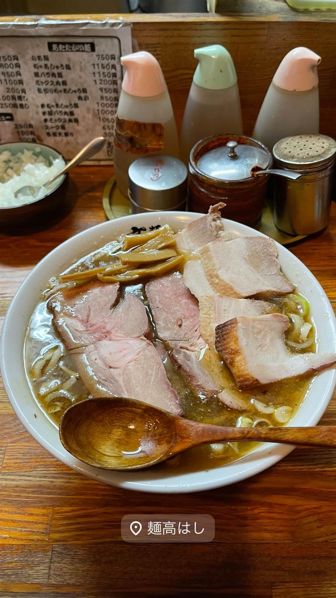
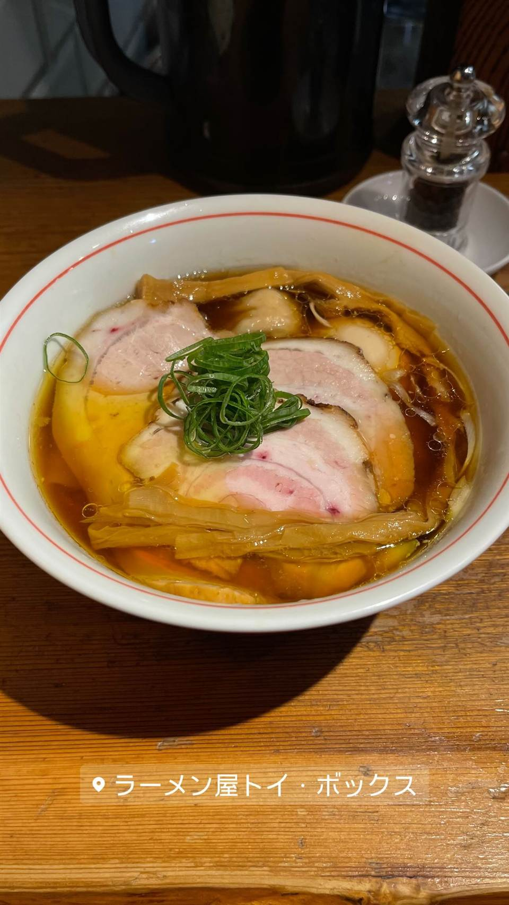

★中華蕎麦 無冠（五反田店）
元プロボクサーの店主が作る、牡蠣の旨みを凝縮した塩そば
中華蕎麦 無冠
元プロボクサーという異色の経歴を持つ小松崎俊夫氏が手がける一軒。常盤台の人気店「Soupmen」、中野坂上の「むかん」に続く店で、透き通ったスープに牡蠣の旨みを凝縮した「特製牡蠣塩」が看板。

TRIVIA
へえ、という話
- 店主・小松崎氏は元プロボクサーで、TV番組「ガチンコファイトクラブ」出身
- 看板の「特製牡蠣塩」は単一メニューとして提供されている
| 創業 | 2022年11月24日開業 |
|---|---|
| 系譜 | 店主・小松崎氏が2018年10月に常盤台で開いた「Soupmen」、その後中野坂上で開いた「むかん」に続く3店舗目。Soupmen／むかんの系譜を継ぐ店。 |
| 看板 | 特製牡蠣塩 |
| こだわり | 透き通ったスープに牡蠣の香りと旨味を凝縮させた一杯。牡蠣に辛味噌を合わせるなど独自のアレンジも。 |
| 掲載・受賞 | 前身「Soupmen」は食べログ「ラーメン百名店」2021年版に選出。 |
| 予算 | 昼 ¥1,000～¥1,999 夜 ¥1,000～¥1,999 |
| 場所 | 五反田駅 東京都品川区西五反田（五反田駅西口付近） |
| 注意 | 五反田駅A2出口から徒歩約1分。開店当初は完全予約制・6席のみだったが、現在は予約なしでも入店可能。 |
食べたもの：ラーメン
NEARBY
近い店・同じ系統の店
-
 ★
醤油・中華そば 三軒茶屋駅
めん和正（わしょう）
看板のない行列店、永福町大勝軒系の煮干し中華そば
昼 ～¥999 夜 ～¥999
★
醤油・中華そば 三軒茶屋駅
めん和正（わしょう）
看板のない行列店、永福町大勝軒系の煮干し中華そば
昼 ～¥999 夜 ～¥999
-
 ★
醤油・中華そば 町田駅
白河手打中華そば 一番いちばん
白河ラーメン元祖「とら食堂」仕込みの手打ち太縮れ麺
昼 ¥1,000～¥1,999 夜 ¥1,000～¥1,999
★
醤油・中華そば 町田駅
白河手打中華そば 一番いちばん
白河ラーメン元祖「とら食堂」仕込みの手打ち太縮れ麺
昼 ¥1,000～¥1,999 夜 ¥1,000～¥1,999
-

★ 醤油・中華そば 赤羽 麺 高はし 創業時から浅草開化楼の太麺を使い続けるチャーシュー麺 昼 ～¥999 夜 ～¥999 -
 ★
醤油・中華そば 戸塚駅
支那そばや 本店
「ラーメンの鬼」佐野実が生んだ醤油ラーメンを妻が継ぐ
昼 ¥1,000～¥1,999 夜 ¥1,000～¥1,999
★
醤油・中華そば 戸塚駅
支那そばや 本店
「ラーメンの鬼」佐野実が生んだ醤油ラーメンを妻が継ぐ
昼 ¥1,000～¥1,999 夜 ¥1,000～¥1,999
-
 ★1
醤油・中華そば 池尻大橋駅
中華そば 千乃鶏
下北沢「千里眼」の系譜、夜限定の釜玉油そばも人気
昼 ¥1,000～¥1,999 夜 ¥1,000～¥1,999
★1
醤油・中華そば 池尻大橋駅
中華そば 千乃鶏
下北沢「千里眼」の系譜、夜限定の釜玉油そばも人気
昼 ¥1,000～¥1,999 夜 ¥1,000～¥1,999
-

★ 醤油・中華そば 三ノ輪駅 ラーメン屋 トイ・ボックス 浅草で6年修行した店主の、雑味のない澄んだ醤油ラーメン 昼 ¥1,000～¥1,999 夜 ¥1,000～¥1,999